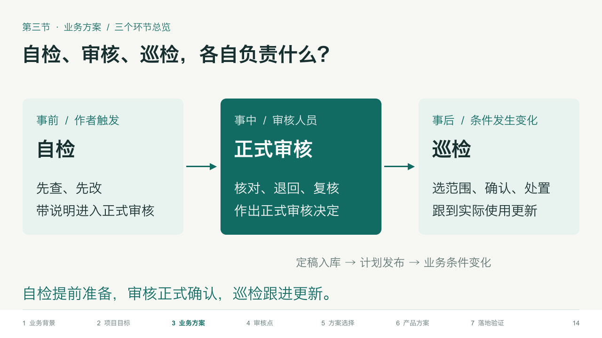
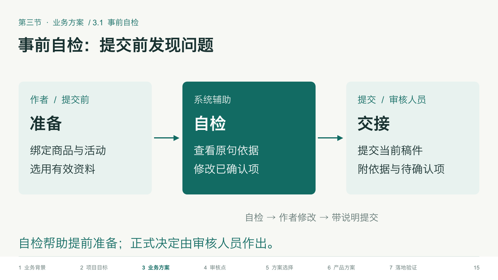
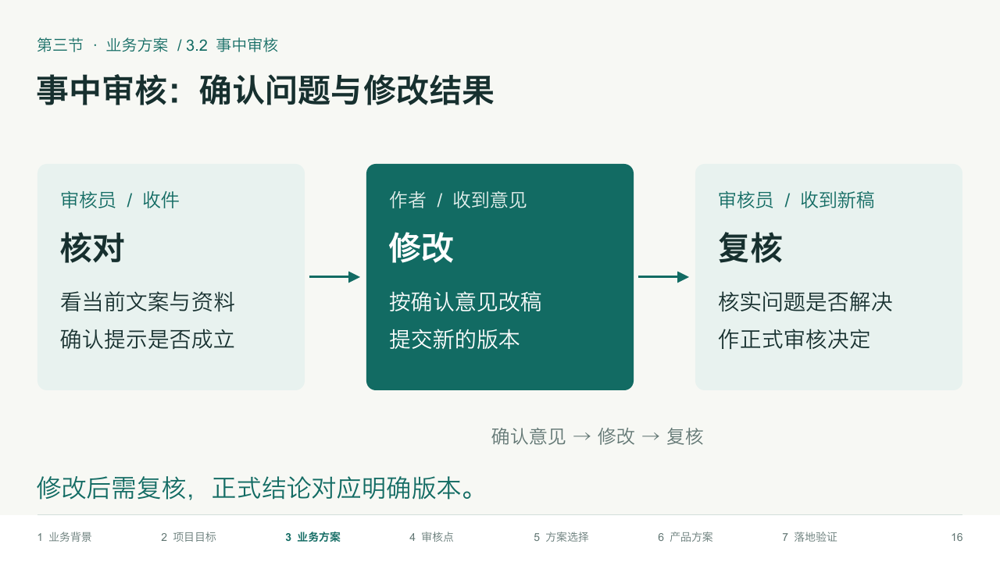
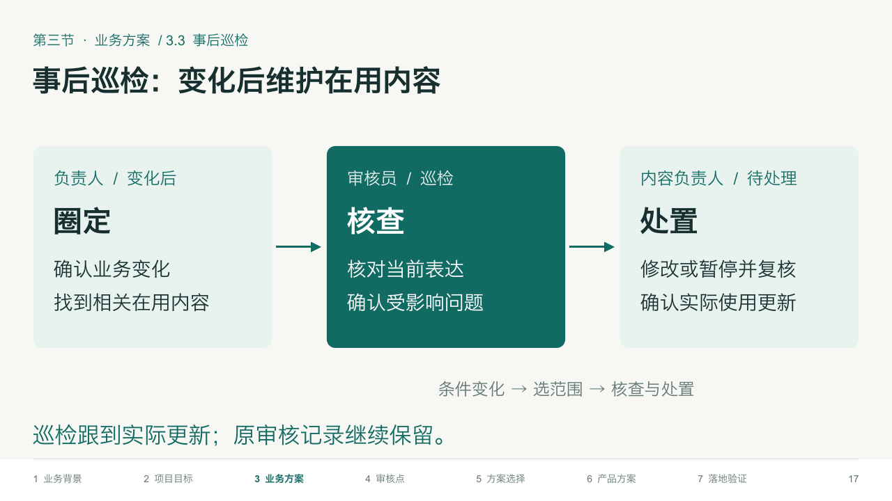

第一次课 · 第三节：业务方案
5页重点版，连续页码P13—P17。章节标题、三环节总览，以及自检、审核、巡检各一页。每页说明谁在什么时候做、主要负责什么，以及结果怎样交接。
自检提前准备；审核正式确认；巡检跟进实际更新。页面复用结构强化版原生模板，保留可编辑文字和图形，5页均含教师备注。
P13 · 第三节标题页 P14 · 三个环节总览
P14 · 三个环节总览
P15 · 事前自检
P16 · 事中审核
P17 · 事后巡检
画面由实际PPTX渲染。品牌、人物和案例均为教学模拟。讲解细节保留在教师备注中。